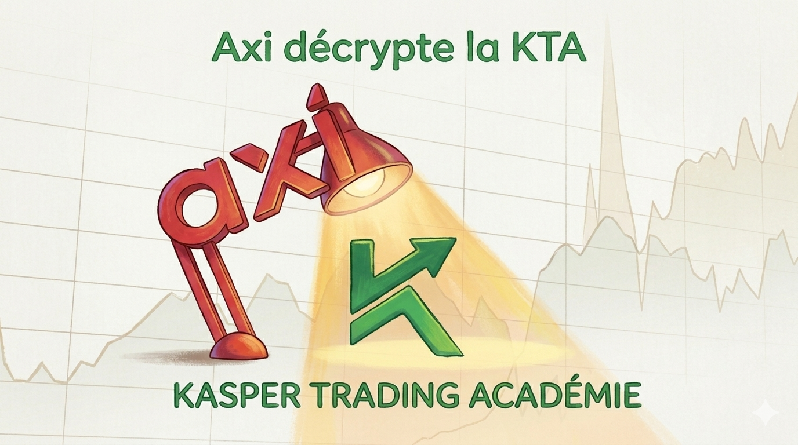
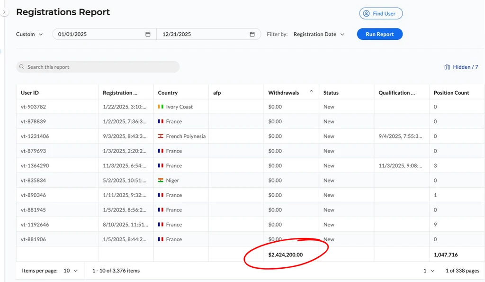
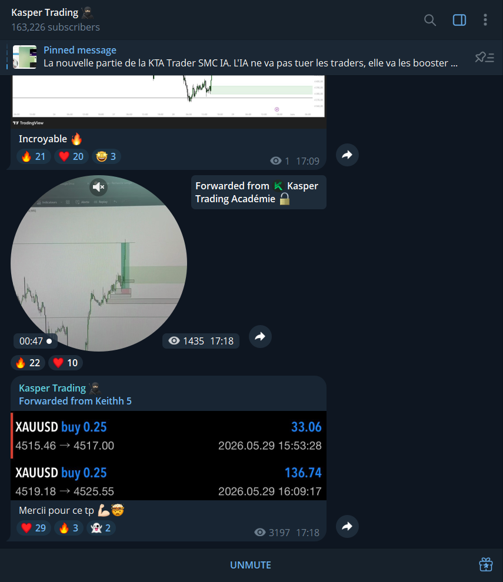
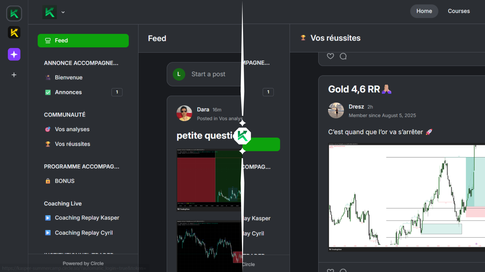
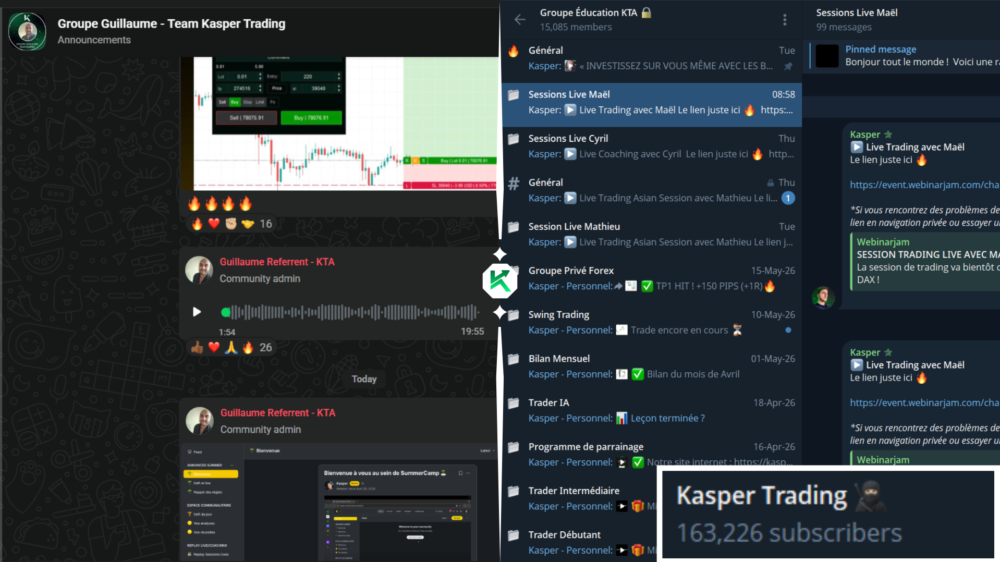

Comment la Kasper Trading Académie a structuré l'environnement exact pour vous rendre rentable
Kasper Trading s’est imposé au centre de tous les débats dans le milieu du trading francophone en 2026. Entre les centaines d’avis positifs, les accusations d’arnaque de ses compétiteurs et ses millions de vues sur YouTube, difficile de ne pas le remarquer.
Si vous hésitez à franchir le pas, paralysé entre les promesses et les critiques, nous avons tranché dans le vif : nous avons audité les témoignages, décortiqué l’offre de fond en comble et passé le parcours du fondateur au crible pour vous livrer un verdict sans filtre.
Cependant, il vous faut prendre conscience d’une chose avant de passer à l’action : aucune formation ne vous garantira le succès sans un travail personnel drastique, une discipline de fer et un money management rigoureux. Voici exactement ce que vous devez savoir avant de poser votre capital sur la table.
Vous pouvez aussi consulter les différents avis des membres ici https://tradingkasper.com/avis/.
Pourquoi 90% des traders échouent seuls
L'industrie du trading en ligne prospère on une illusion : celle du trader solitaire qui génère des profits depuis son canapé avec un simple smartphone. Chez Axi, nous traitons quotidiennement les flux de milliers d'investisseurs. La réalité factuelle est brutale : la majorité de ceux qui échouent ne manquent pas de capital, ils manquent d'infrastructure.
Vous êtes probablement confronté à des symptômes évidents :
- L'infobésité : Vous accumulez des centaines de vidéos YouTube et des indicateurs techniques, mais votre trading reste brouillon, sans méthode claire chaque matin.
- Le chaos émotionnel (FOMO) : Vous entrez trop tard sur un marché par peur de rater un mouvement, vous overtradez, ou vous doublez vos lots pour "vous refaire" après une perte.
- L'isolement destructeur : Vous êtes seul face à votre écran. Personne pour valider une analysis, personne pour pointer vos erreurs récurrentes de gestion du risque.
- Le FUD paralysant : Tout simplement la peur de prendre une position, un doute qui vous fait systématiquement rater l'opportunité de départ pour finalement vous faire entrer beaucoup trop tard par peur de rater une opportunité (FOMO), juste au pire moment.
- Le revenge trading et le capital qui s'envole : Le manque de discipline prend le dessus après une perte, vous pousse à enfreindre vos règles, à abandonner votre money management pour "vous refaire", menant inévitablement au pire des cas : le brûlage complet de votre capital.
Retenez toujours : 1% de perdu, c'est 2% pour revenir au meme niveau. Le trading non encadré se transforme inévitablement en casino. C'est ici que l'écosystème intervient.
La croissance fulgurante de la Kasper Trading Académie
En seulement quelques mois, la communauté est passée de [À REMPLIR : X] membres actifs à [À REMPLIR : Y]. La raison qui explique cette croissance fulgurante repose sur deux piliers :
- Un discours qui se veut transparent, franc et drastique sur les difficultés réelles du trading retail.
- Une méthode rigoureuse basée sur la Smart Money Concept (SMC) qui attire les traders cherchant une alternative pragmatique aux indicateurs techniques classiques devenus obsolètes.
Le remède à l'autodestruction : L'écosystème KTA
Nous mettons aujourd'hui en lumière la Kasper Trading Académie (KTA). Loin des vendeurs de rêve, cette structure s'est imposée en francophonie avec un pragmatisme absolu. Les chiffres ne mentent pas : la KTA regroupe aujourd'hui un réseau de plus de 150 000 membres, dont plus de 15 000 actifs dans son écosystème privé, et a validé plus de 2,4 millions d'euros de retraits documentés par sa communauté.


Leur secret ne réside pas dans une formule magique, mais dans une compréhension drastique des besoins des traders. La KTA sait pertinemment qu'il existe deux typologies d'individus sur les marchés, et a construit un parcours sur-mesure pour chacun d'eux :
- Que vous soyez un trader possédant un petit capital propre (500€ à 2 000€), ou un profil plus expérimenté possédant plus de capital.
- Que vous vouliez être guidé au quotidien, apprendre les bases gratuitement, et suivre l'exécution et la gestion de positions d'un professionnel pour éviter l'isolement.
- Ou que vous fassiez partie de ceux qui ont compris que les signaux ne suffisent pas, qui cherchent un mentor, un audit clinique de leurs erreurs, et un sanctuaire privé pour briser leur plafond de verre psychologique... La KTA a tout prévu.
Vous pourrez suivre de l'analyse à la prise jusqu'à la gestion de positions lors de sessions de trading live, en direct chaque jour de la semaine sur les marchés, vous permettant de ne plus jamais avancer seul.
Ou alors recevoir un coaching 1-1 avec des traders rentables ayant des années d'expérience et vivant de leurs performances, échanger avec d'autres personnalités aussi passionnées, savantes, et peut-être même plus performantes que vous.
Voir même vous concocter votre propre réseau de contacts international grâce à notre réseau mondial de traders francophones KTA répartis un peu partout sur le globe. Vous trouverez ici tout ce qu'il vous faut pour atteindre l'autonomie sur les marchés.
Noté par sa communauté 4.6 sur Trustpilot

Obtenir et maintenir une note de 4.6/5 sur Trustpilot dans le secteur de l'éducation financière est une performance statistique qui mérite qu'on s'y arrête. Le trading est par définition une activité où la majorité des débutants perdent de l'argent par manque de rigueur. En toute logique, le premier réflexe d'un opérateur frustré est de rejeter la faute sur sa formation en postant un avis incendiaire.
Une note aussi élevée prouve une chose : la masse critique des membres de la KTA obtient des résultats ou, a minima, valide la transparence de l'écosystème. Cela représente environ 92% d’avis positifs. Les avis soulignent régulièrement la clarté du parcours pédagogique et l'absence de fausses promesses.
Points forts et points critiques : L'évaluation sans filtre
Parlons des avis négatifs. Parce qu’il y en a, et c’est une excellente chose : ils font office de filtre naturel entre ceux qui ont l'étoffe pour réussir et les touristes. Quand on creuse les critiques sur la KTA, on se rend compte d’une réalité à laquelle font face tous les traders, KTA ou non : le combat contre soi-même.
Voici la réalité derrière les deux reproches principaux :
- Le coût du cercle privé et des coachings 1-1 : Les tarifs de l'accompagnement personnalisé sont élevés, c'est un fait. Mais ce reproche omet un élément majeur de transparence : l'infrastructure essentielle de la KTA est gratuite. Les sessions de trading live quotidiennes, l'accès au référent dédié et les bases techniques ne coûtent rien, si ce n'est le capital que vous déposez chez le courtier pour trader (et qui reste le vôtre). Rémunérer le temps et l'expertise exclusive d'un professionnel est une norme de marché. Critiquer ce coût tout en bénéficiant d'un écosystème live sans frais relève d'une attente irréaliste.
- Le manque de résultats individuels : On trouve des témoignages de membres ayant perdu du capital. C'est la réalité de ce milieu. Toutefois, le trading n'est pas une rente garantie, mais une discipline d'exécution. La KTA fournit le cadre de money management et l'accès aux graphiques en direct ; si l'élève cède au revenge trading, au FOMO ou ignore les règles de gestion par indiscipline, l'échec est individuel. Aucun écosystème ne peut sauver un trader qui refuse de s'imposer des règles strictes.
En contrepartie, l'examen des retours positifs met l'accent sur ce qui se cache derrière les critiques : les piliers structurels qui font l'efficacité de la méthode pour les profils rigoureux. L'intérêt de la KTA repose sur des faits concrets, loin des promesses marketing habituelles.
- Confrontation live et destruction de l'isolement : Les sessions de trading live quotidiennes, complétées par l’accès aux replays, éliminent le biais de la théorie pure. Observer un professionnel analyser et gérer ses positions en temps réel offre une confrontation directe avec la réalité des graphiques. Cet écosystème live, adossé à une communauté active de milliers de membres, neutralise le principal facteur d'échec du trader indépendant : l'isolement destructeur. L'échange d'analyses entre pairs sert ici de levier de validation.
- Flux institutionnels (SMC) et structure anti-infobésité : Le choix pédagogique du Smart Money Concept (SMC) offre une alternative axée sur les flux et la liquidité des institutions financières faisant bouger le marché, une aternative bien plus performante aux indicateurs techniques classiques souvent obsolètes. C’est une structure logique qu’ils ont mise en place pour vous éviter l'infobésité et vous imposer la maîtrise des bases indispensables avant d'accéder aux concepts avancés.
- Discours authentique et réalité brute du terrain : La KTA est neutre, son discours transparent. Contrairement aux illusions de gains rapides, la structure rappelle constamment que les pertes font partie du processus et que seul le travail personnel paie. Qu’ils ne sont pas conseillers en investissement et que le trading comporte des risques de pertes de capital. Ce positionnement réaliste semblant pessimiste mène à des performances concrètes et des résultats vérifiables chez les profils qui s'imposent la discipline nécessaire, tout comme Kasper vous montrant ses gains et pertes avec transparence et confiance.
Un écosystème périphérique formateur
La Chaîne YouTube
La chaîne YouTube de Kasper Trading est une véritable mine d'or pour le trader retail. Loin des vlogs lifestyle tape-à-l'œil, elle fait office de journal de bord et de bibliothèque éducative. Elle permet d'étudier la psychologie du fondateur et de valider gratuitement la pertinence de ses analyses SMC avant tout engagement.
- + de 268 k abonnés actifs.
- 25,473,390 millions de vues rien que sur Youtube.
- jusqu'à 3 sessions de trading en direct chaque jours de la semaine.
Challenges récurrents de la KTA
La KTA stimule l'exécution de ses membres par des événements d'envergure, forçant les traders à appliquer leur gestion du risque sous pression :
- Le Winter Challenge : 1 mois de pure défi, des lives chaque jour, de la compétition, des dizaines de milliers d'euros de récompenses pour les membres et un objectif : faire la performante la plus impressioante comme cadeau de Noël. Des comptes de trading financés à plusieurs dizaines de milliers d'euros, PS5, iPhone, voyage et bien plus encore.
- Le Summercamp : La version été du Winter Challenge, un camp d'entrainement intensif, avec pour cette année 2026 plus de 20,000€ à remporté lors de défi quotidien et ce durant 2 semaines. Les membres pourrons s'y challenger, s'entrainer, s'entraider, et tenter d'effectuer leur meilleurs performances dans un milieu compétitif motivant et récompensant.
- 100k de profits trading en 1 mois : L'objectif est simple... Kasper dois trader pendant 1 mois devant tout les membres, et réaliser 100,000.00 euros de profit net.Il démontre ici l'importance d'une méthode précise et d'un risk management dynamique, chaque traders peuvent suivre Kasper dans ce scaling de compte des plus performants.
Phase 1 : L'entrée gratuite et le diagnostic humain (WhatsApp)
La majorité des groupes en ligne vous lâchent dans un canal anonyme dès votre premier clic. La KTA applique une approche radicalement opposée. Le parcours commence sur l'application Telegram, où vous accédez instantanément à un groupe public. Mais la véritable valeur s'active à l'étape suivante.
Vous n'êtes pas un simple numéro. Vous êtes invité à réserver un appel complètement gratuit de 15 minutes sur WhatsApp avec un référent KTA dédié. L'objectif de cet échange n'est pas de vous vendre une formation, mais d'auditer votre profil :
- Parler de trading à cœur ouvert et définir vos ambitions financières réelles.
- Identifier vos blocages (techniques ou psychologiques) avec un professionnel.
- Vous expliquer pas-à-pas comment configurer votre environnement sécurisé chez Axi.
- Vous accompagner dans votre premier dépôt (qui reste retirable à 100% à tout moment).
- Et obtenir son numéro de téléphone pour lui poser toutes vos questions, 7j/7.
Tout est là, et ce simple dépôt vous déverrouille les portes de l'écosystème privé, sans aucun frais caché.
Phase 2 : De l'arène Telegram au sanctuaire Circle
Une fois membre de la communauté privée, la solitude disparaît. Pour la masse des membres cherchant l'exécution assistée, l'environnement Telegram répond au besoin urgent de structure. Vous bénéficiez de :
- Sessions de Live Trading : L'ouverture européenne le matin (9h-11h) et la session américaine l'après-midi (15h30-18h). Vous calquez votre rythme sur un professionnel.
- Prise de Positions ("Buy & Sell") : Les prises de positions personnelles de Kasper. Vous ne tradez plus au hasard, vous comprenez le timing.


Cependant, la KTA sait que Telegram reste un environnement bruyant (notifications, afflux d'informations). Pour les traders les plus exigeants — ceux qui veulent devenir pleinement autonomes et vivre du trading — l'académie a conçu une porte de sortie vers l'excellence : Le Circle.
Accessible sur simple demande à votre référent, cet écosystème haut de gamme ("High-Ticket") est une véritable thérapie de performance. C'est l'extraction totale du bruit extérieur :
- Un espace de travail adapté : Calme, structuré, où l'on documente sa progression avec des traders sérieux.
- Coaching 1-1 ("One-to-One") : Un expert joignable 24/7j par message audite votre journal de trading en direct lors d'un appel en face à face, identifie la faille exacte qui draine votre capital, et corrige votre tir de façon chirurgicale.
- Cursus Académique Complet : Formations 100 % en ligne sur la technique SMC (Smart Money Concepts), l'analyse fondamentale, un module lourd dédié au mindset et à la psychologie, mais surtout la méthode propriétaire utilisée par Kasper pour générer plusieurs centaines de milliers d'euros sur les marchés : la méthode FBO.
- Certification : La validation de vos compétences par l'obtention du Certificat de Trader SMC officiel de la Kasper Trading Académie.
Ton Chemin Avec Notre Académie


Live Coaching


Les 10 niveaux d'évolution d'un trader de la KTA
La puissance de cet écosystème réside dans la clarté de sa progression. Le parcours utilisateur est pensé pour réduire la friction et vous mener de la théorie à l'indépendance totale :
- 01 Téléchargement de Telegram et accès instantané au groupe public.
- 02 Diagnostic trading via un appel gratuit de 15 minutes avec un référent WhatsApp.
- 03 Ouverture guidée du compte sécurisé chez Axi et premier dépôt (retirable à tout moment).
- 04 Intégration dans la communauté privée et déblocage de la formation de base.
- 05 Suivi des sessions Live quotidiennes et des prises de positions de Kasper.
- 06 Demande au référent d'intégrer le "Circle" pour passer à l'autonomie supérieure.
- 07 Audit et performance en coaching 1-1 avec un Trader et coach rentable de la KTA.
- 08 Restructuration psychologique avec le module Mindset de la KTA.
- 09 Maîtrise technique via le cursus complet 100% en ligne (SMC et fondamental).
- 10 Évaluation finale et obtention du Certificat KTA officiel de Trader SMC.
Arnaque ? Le verdict de nos experts.
Une question légitime subsiste : est-ce une arnaque ? Pour le savoir, analysons de manière clinique les caractéristiques des vraies arnaques, et comparons-les au modèle KTA.
Les caractéristiques des vraies arnaques :
- Transparence : L'identité des fondateurs et le fonctionnement interne restent totalement opaques.
- Véracité des résultats : Les performances affichées sont impossibles à vérifier ou auditer.
- Promesses de gains sans risques : Ils garantissent des profits rapides et sans aucun risque financier.
- Support douteux : Le service après-vente est inexistant une fois votre argent encaissé.
- Témoignages : Les avis clients sont manifestement falsifiés et créés de toutes pièces, et il est clairement visible que les vidéos sont générées par IA.
- Remboursement : Il est techniquement impossible d'obtenir le moindre remboursement.
Comparons avec les caractéristiques de Kasper Trading :
- Transparence : Les contenus gratuits sur YouTube permettent d'évaluer la méthode avant d'investir.
- Véracité des résultats : Un bilan mensuel consignant chaque prise de position gagnante et perdante est posté publiquement à chaque membre de la communauté. Vous pouvez consulter librement toutes les performances depuis le 1er janvier 2024.
- Les gains : Aucun profit n’est garanti. Kasper Trading insiste sur le fait qu’aucun membre de son équipe ou lui-même n’est conseiller en investissement, et que le trading comporte des risques sérieux de pertes de capital. Son discours insiste sur la difficulté réelle et la volonté demandée.
- Qualité du support : Un service client réactif reste accessible 7/7j directement sur l'application Telegram ainsi que par votre référent dédié donné gratuitement à l’entrée joignable par WhatsApp. Et cela que ce soit avant ou après votre entrée (qui ne nécessite aucun paiement envers la KTA).
- Témoignages : Kasper Trading c’est des centaines de témoignages écrits, audios et vidéos visiblement authentiques que nous avons consultés, 826 avis vérifiés sur Trustpilot pour une note totale de 4.6/5 étoiles notée « excellent » et aucune trace de témoignages générés par IA.
- Contenu : La formation est complète et réelle. Chaque membre de l’accompagnement bénéficie de séances de coaching individuel en face à face lors d’un appel vidéo (partage d'écran pour auditer le travail).
Notre avis tranché sur Kasper Trading
Le trading exige de la volonté, du temps, de la discipline et une structure claire. Apprendre seul, sans méthode définie noir sur blanc, conduit généralement à la perte de votre capital.
C’est pourquoi la Kasper Trading Académie attire de plus en plus l’attention aujourd’hui. Elle a prouvé être une option sérieuse pour ceux qui recherchent un cadre rigoureux, une présence quotidienne pour le soutien, une communauté active et un accompagnement réel. Aucune formation ne garantit la rentabilité, mais s'entourer d'opérateurs expérimentés reste le meilleur moyen de progresser et d'éviter les erreurs fatales des débutants.
FAQ : Réponses à vos questions sur Kasper Trading
Qu'est-ce que la Kasper Trading Académie ?
Une structure de formation créée par celui connu sous le nom de Kasper, trader indépendant spécialisé sur l'or et le Bitcoin. Elle enseigne le Smart Money Concept (SMC), une méthode pour repérer les ordres des institutions financières. Le programme inclut la Kasper Trading Academy (KTA), des sessions de trading en live chaque jour de la semaine, un groupe Telegram regroupant des milliers de membres francophones qui partagent leurs analyses et participent à des sessions de trading en direct.
Faut-il de l'expérience pour s'inscrire ?
Non. La formation accueille les débutants complets ainsi que les profils intermédiaires ou avancés. Le parcours est progressif, partant des concepts de base pour aller vers les stratégies avancées.
Est-ce compatible avec un travail à temps plein ?
Oui. Les cours sont accessibles à vie et les lives sont disponibles en replay pour être visionnés à votre rythme. Gardez en tête que le trading demande une mise en pratique rigoureuse : vous devrez y consacrer plusieurs heures par semaine en dehors de votre emploi.
En combien de temps devient-on rentable ?
Il n'existe aucune réponse universelle. La rentabilité dépend directement de votre discipline, de votre gestion des émotions, de votre capital et de votre temps de pratique. La formation accélère l'apprentissage, mais ne remplace pas les heures de graphiques nécessaires.
La communauté Telegram est-elle vraiment utile ?
Les retours des membres confirment qu'elle est très active au quotidien. C'est un excellent outil pour s'entraider et partager des analyses graphiques. L'unique contrepartie est le flux important d'informations qu'il faut apprendre à filtrer.
Peut-on réellement gagner de l'argent après la formation ?
Oui, c'est possible, et les chiffres le prouvent : les membres de la communauté ont cumulé plus de 2,4 millions de dollars de retraits en 2025. Cependant, ces performances passées ne garantissent pas vos gains futurs. Votre réussite dépendra de votre respect strict du money management et de votre investissement personnel.
Quels sont les services et formations inclus ?
L'offre comprend un cursus complet : fondamentaux, SMC, analyse technique avancée, stratégies et gestion du risque. En bonus, chaque membre bénéficie d'un coach personnel, d'analyses de marché régulières et de sessions de live trading couvrant les sessions européenne, américaine et asiatique.